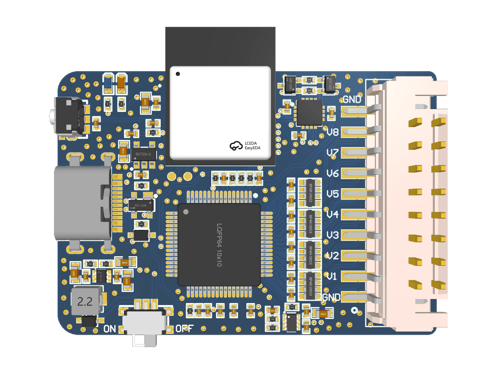

ESP32C6_CH8_DAQ_V1.0

8 CH ｜ 16 bit ｜ 200 kSPS/CH ｜ 同步采样 ｜ Wi-Fi TCP
1. 产品概述
ESP32C6_CH8_DAQ_V1.0 是一款基于 ESP32-C6 的 8 通道同步数据采集卡，支持 16-bit ADC、最高 200 kSPS/CH 同步采样，并通过 Wi-Fi TCP 将采样数据实时传输至 PC。配套 Python 上位机支持实时波形显示、数据存储及后续信号分析。
2. 核心特点
8 CH 同步采样
8 路模拟输入同步采集，适用于多通道信号分析。16-bit 高分辨率 ADC
提供更精细的电压信号采集能力。200 kSPS / CH 高速采样
单通道最高支持 200 kSPS 实时采集。±10 V / ±5 V 双量程输入
兼容多种模拟电压信号。Wi-Fi TCP 实时传输
采样数据可无线实时上传至 PC。Python 上位机支持
支持实时波形、数据存储及二次分析。
3. 详细规格
参数 |
规格 |
|---|---|
模拟输入 |
8 CH |
ADC分辨率 |
16 bit |
最高采样率 |
200 kSPS / CH |
总采样率 |
约为 1500kSPS |
采样方式 |
8通道同步采样 |
输入范围 |
±10 V / ±5 V |
输入类型 |
单端/双极性 |
模拟带宽 |
实测后填写 |
输入阻抗 |
实测/设计值 |
SNR |
实测后填写 |
ENOB |
实测后填写 |
RMS Noise |
实测后填写 |
通信方式 |
WiFi TCP |
工作模式 |
连续 |
上位机 SDK |
Python |
尺寸 |
46 × 32 mm |